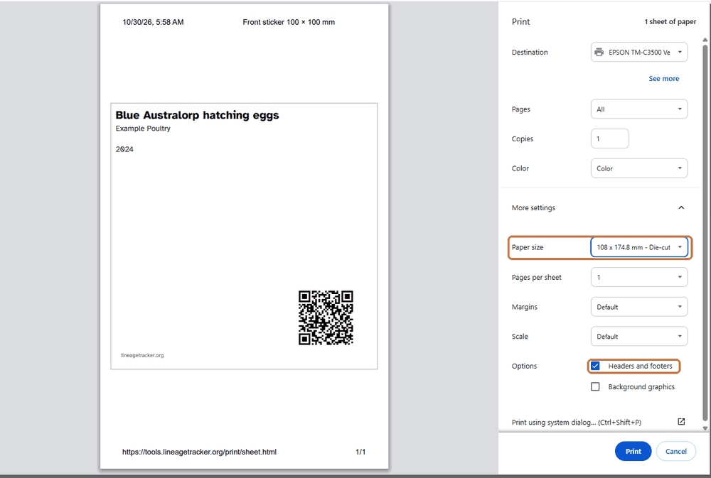
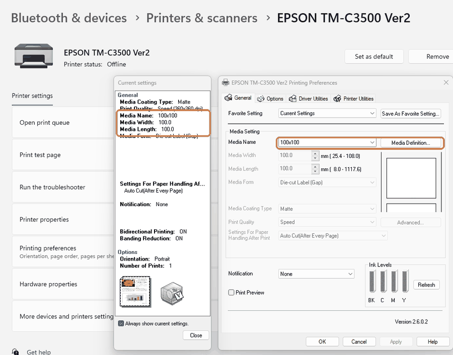

Printing labels: what to check
LT-Print always sends your design at the exact size you chose. What happens next is up to your browser's print box and your printer's own settings — and those two have to agree, or the design lands on the wrong part of the sticker.
One label is printing across two or more stickers
This is the common one on label printers, and it is almost never the design. There are two sizes in play:
- The size LT-Print asks for. If you picked a 100 × 100 mm label, the page it sends is 100 × 100 mm.
- The paper size your print box is set to. If that says something else — a bigger die-cut size, a "fit" or "reduction" size, A4 — the printer feeds to its size, and your design ends up straddling the gap between two stickers.
Quick test. In the print box, change the destination to Save as PDF and save the file. Open it and check the page size. If the PDF is the right size, the design is fine and everything left to fix is on the printer side.
Fixing it
- Open the print box and look at Paper size. It needs to be the size of one of your labels. Not "fit", not "reduction", not the next size up.
- If your label size is not in that list, the list is not the browser's — it comes from your printer's own driver. You have to add the size there first. The browser can only offer what the driver already knows about.
- Add it in the printer's own settings. On Windows: Settings → Printers & scanners → your printer → Printing preferences. Label printers usually have a media or paper definition button on the first tab, with a New option: give it a name, then type the label width, the label length, and the gap between labels on your roll. Measure the gap if you are not sure — die-cut rolls are commonly 2–3 mm.
- Close the browser and open it again. It reads the printer's size list when it starts, so a new size usually will not appear until then.
- Print again and pick your new size in Paper size.


Before every label print
- Paper in LT-Print set to One label per page.
- Paper size in the print box set to your label size.
- Headers and footers turned off, or the browser prints the date, the title and the web address on the label.
- Margins set to None.
- Scale set to 100%, not "Fit to page" — fitting shrinks the design and throws the sizes out.
- Background graphics turned on if your design has colour blocks or a filled panel, or they will not print.
Other things that come up
Text is cut off. LT-Print shrinks text to fit its box, but only so far. If a field is still too long it marks the box with a dashed outline on the canvas and warns you. Make the box bigger, shorten the text, or let it run to a second line.
A QR code will not scan. Print it at about 20 mm square or larger, leave clear space around it, and keep it dark on a light background. Glossy labels under a hard light can also defeat a scanner — try it on matte.
Nothing prints, or you get a blank sticker. Check the printer is not showing Offline, and that you have the right destination selected — it is easy to leave it on Save as PDF after testing.
Colours look different on the label. Screens are backlit and labels are not, so a colour will always print a little darker and flatter. If it is badly out, check the printer's own media type setting matches the stock you have loaded (matte, gloss, synthetic), because that setting changes how much ink goes down.
Printing from a tablet or phone. The same rules apply but the print box is smaller and often hides the paper size behind a "more settings" or "options" link. If your tablet cannot reach the paper size at all, save to PDF, send it to a computer, and print it from there.
Still stuck? Send us the printed label and a photo of your print box through the feedback page and we will work it out.